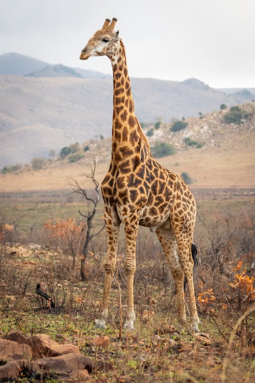
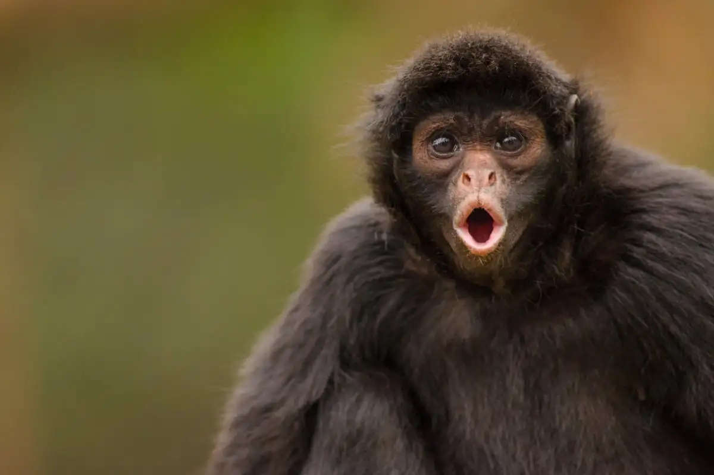

Bears

- Ollie
- Mona
Bears are mammals that belong to the family Ursidae. They can be as small as four feet long and about 60 pounds (the sun bear) to as big as eight feet long and more than a thousand pounds (the polar bear). They're found throughout North America, South America, Europe, and Asia.
Read more about BearsGiraffes
- Frankie
- Coconut
Giraffe, (genus Giraffa), any of four species in the genus Giraffa of long-necked cud-chewing hoofed mammals of Africa, with long legs and a coat pattern of irregular brown patches on a light background.
Read more about GiraffesLions

- Mella
- Karl
Lion, (Panthera leo), large, powerfully built cat (family Felidae) that is second in size only to the tiger; it is a famous apex predator (meaning without a natural predator or enemy). The proverbial “king of beasts,” the lion has been one of the best-known wild animals since earliest times. Lions are most active at night and live in a variety of habitats but prefer grassland, savanna, dense scrub, and open woodland. Historically, they ranged across much of Europe, Asia, and Africa, but now they are found mainly in parts of Africa south of the Sahara.
Read more about LionsMonkeys
- Cookie
- Earl
- Banana Pudding
Monkey, in general, any of nearly 200 species of tailed primate, with the exception of lemurs, tarsiers, and lorises. The presence of a tail (even if only a tiny nub), along with their narrow-chested bodies and other features of the skeleton, distinguishes monkeys from apes. Most monkeys have a short, relatively flat face without great prominence of the muzzle, although baboons and mandrills are notable exceptions
Read more about MonkeysAlligators

- Wren
- Aspen
- Mika
Alligator, (genus Alligator), either of two crocodilians related to the tropical American caimans (family Alligatoridae). Alligators, like other crocodilians, are large animals with powerful tails that are used both in defense and in swimming.
Read more about Alligator